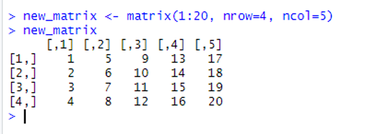
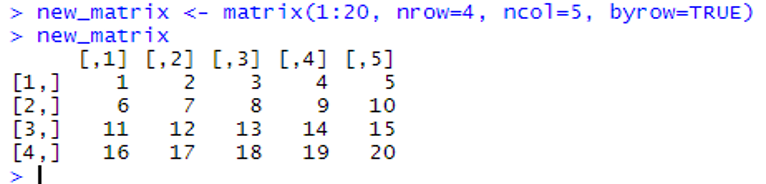
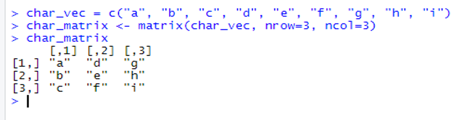
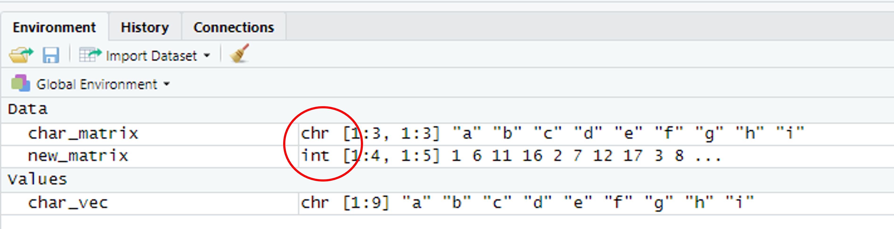
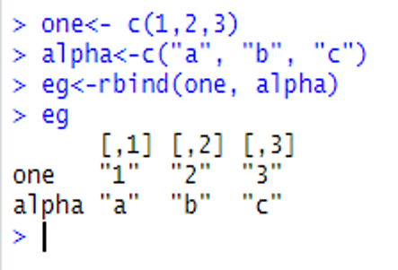
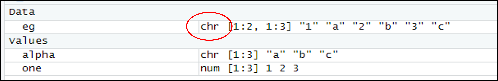

7 Matricies
7.1 Introduction
This document is part of our “First Steps in R” resources. It follows on from similar documents about vectors and functions in R. It is assumed that the reader understands how to define numerical and character vectors and call a function in R. If you would like to recap these topics, the documents and videos are on the MASH website.
7.2 What is a Matrix?
In mathematics, a vector can be thought of as a single line of numbers in order, usually written in a column like so:
\[ \begin{bmatrix} 2 \\ 1 \\ 0 \\ 7 \\ 4 \\ \end{bmatrix} \]
A matrix is a grid of numbers arranged in rows and columns like so:
\[ \begin{bmatrix} 2 & 1 & 0 & 5 \\ 4 & 2 & 3 & 9 \\ 0 & 8 & 8 & 1 \\ \end{bmatrix} \]
Although there are differences between matrices in R and in mathematics, this grid arrangement is the key feature that they have in common.
7.3 Defining a Numerical Matrix in R
The following code is used to define a matrix in R. We will look at the elements of the code in turn:
new_matrix <- matrix(1:20, nrow=4, ncol=5)
In R, a matrix is an “object.” To define any new object we begin by giving it a name. Then we use the assignment operator <- to tell R that the definition of the object is about to follow. We will call our matrix “new_matrix”:
new_matrix <-
So far, everything is the same as if we were defining a vector. Next we use the function “matrix” to tell R that the object we are defining will be a matrix.
Once we have stated which numbers we want to arrange in a matrix, we next specify how many rows and columns we want the matrix to have.
In the above example, we chose \(4\) rows and \(5\) columns.
The first argument of the matrix function must be a vector. In the above example we have used the vector 1:20 which is just the numbers \(1\), \(2\), \(3\), \(\ldots\) , \(20\). Any vector can be used. The vector can be defined inside the matrix function like so:
new_matrix2 <- matrix(c(2,3,2,3,4,6,3,7,6), nrow=3, ncol=3)
In the above example the code tells R to concatenate (join together) the \(9\) numbers (\(2\), \(3\), \(2\), \(3\), \(4\), \(6\), \(3\), \(7\), \(6\)) into a matrix with \(3\) rows and \(3\) columns. Alternatively, we can define the vector first and use the name of the vector as an argument like so:
eg_vector <- c(2,3,2,3,4,6,3,7,6)new_matrix2 <- matrix(eg_vector, nrow=3, ncol=3)
If we define this matrix:
new_matrix <- matrix(1:20, nrow=4, ncol=5)
in R and then ask R to show us the matrix (by typing new_matrix) we get the following output:

new_matrix, with the data from the vector 1:20 arranged by going down the first column, then the second column and so on, is shown in the console in RStudio.
By default R arranges the data from our vector 1:20 by going down the first column, then the second column and so on. The matrix function has a fourth argument byrow which is set to FALSE by default. If we change byrow to TRUE, R starts by assigning data to the first row, then the second row and so on:

new_matrix, with the data from the vector 1:20 arranged by going along the first row, the second row and so on, is shown in the console in RStudio.
The preferred order for the arguments in the matrix function is as shown above. The vector containing the data must always be the first argument. However, we can put the other arguments in any order as long as the labels nrow=, ncol= and byrow= are used. Without labels, these arguments must be in the order shown above. Each of these three lines of code all define exactly the same matrix:
new_matrix <- matrix(1:20, nrow=4, ncol=5, byrow=TRUE)new_matrix <- matrix(1:20, ncol=5, byrow=TRUE, nrow=4)new_matrix <- matrix(1:20, 4, 5, TRUE)
7.4 Character Matrices
The previous examples discuss numerical matrices. If we define a character vector and ask R to arrange it into a matrix, the resulting matrix is called a character matrix.
For example:
char_vec = c(“a”, “b”, “c”, “d”, “e”, “f”, “g”, “h”, “i”)char_matrix <- matrix(char_vec, nrow=3, ncol=3)char_matrix
produces the following:

char_matrix is shown in the console in RStudio.
If we define char_matrix and new_matrix as above, we can see in the “Environment” window (top right) that the first is stored as a character matrix and the second as a numeric matrix.

char_matrix is shown to be a stored as a character matrix and new_matrix is shown to be stored as a numeric matrix.
chr stands for character and int stands for integer (since all the numbers in our numeric matrix are integers).
7.5 Combining Vectors to Make Matrices
It may be more convenient to define a vector for each row or column of a matrix and then ask R to put the vectors together into a matrix. This can be done with the rbind and cbind functions. rbind combines the vectors as rows and cbind as columns like so:
![An image showing the console in RStudio where 'one <- c(1,2,3)', 'two <- c(4,5,6)', 'three <- c(7,8,9)', 'rbind(one, two, three)' and 'cbind(one, two, three)' are typed in. Underneath 'rbind(one, two, three)' a matrix with three rows and three columns is outputted, with the numbers 1-3 along the first row, 4-6 along the second and 7-9 along the third. Underneath 'cbind(one, two, three)' a matrix with three rows and three columns is outputted, with the numbers 1-3 down the first column, 4-6 down the second and 7-9 down the third.](media/06_media/E_Matrices_in_R_fig5.png "Figure 5")
one, two and three are combined as rows and as columns to make matrices, outputted in the console in RStudio.
7.6 Combining Numeric and Character Vectors
Numeric and character vectors can be combined to make a matrix using rbind or cbind like so:

one and alpha are combined as rows to make the matrix eg, outputted in the console in RStudio.
But if we check how R has stored this matrix, we will see that it is a character matrix:

eg is shown to be stored as a character matrix.
This means that R is now classifying the first row of the matrix as characters and not numbers. Matrices can only have one data type, and when we combine a character vector and a numeric vector, the numeric data is ‘coerced’ to become characters. If we want a row (or column) of numerical data and another with data stored as characters, we need to use a data frame. Data frames are dealt with in other documents in this series which can be found on the MASH website.
7.7 Exercise
In RStudio, define:
- A numerical matrix ordered by columns
- A numerical matrix ordered by rows
- A character matrix
- Three numerical vectors of length \(5\) called
a,bandc - A matrix which has vectors
a,bandcas rows - A matrix which has vectors
a,bandcas columns
7.7.1 Solutions
Solutions
First let’s create a numerical vector of random integers using the
sample()command. The following creates a vector of random integers between \(0\) and \(9\) of length \(12\):> num_vect1 <- sample(0:9, 12,replace=TRUE)> num_vect1[1] 1 6 1 1 7 5 3 2 7 5 9 0
Now create a matrix ordered by columns (remember the default is by columns):> num_mat_col <- matrix(num_vect1,nrow=3, ncol=4)> num_mat_col[,1] [,2] [,3] [,4][1,] 1 1 3 5[2,] 6 7 2 9[3,] 1 5 7 0Now create a matrix ordered by rows:
> num_mat_row <- matrix(num_vect1,nrow=3, ncol=4, byrow=TRUE)> num_mat_row[,1] [,2] [,3] [,4][1,] 1 6 1 1[2,] 7 5 3 2[3,] 7 5 9 0To create a sequential vector of letters, we can use either
lettersorLETTERSdepending on whether you want lowercase or capitals. The following creates a character vector with the first \(12\) letters of the alphabet:> char_vect <- letters[1:12]
You can also take a random sample of letters of the alphabet using thesample()function:> char_vect <- sample(1etters[1:12],12, replace=TRUE)> char_vect[1] “d” “a” “g” “d” “b” “f” “d” “f” “f” “b” “f” “i”
The following uses the character vector that has been created to create a character matrix:> matrix_char <- matrix(char_vect,3,4)> matrix_char[,1] [,2] [,3] [,4][1,] “d” “d” “d” “b”[2,] “a” “b” “f” “f”[3,] “g” “f” “f” “i”
Alternatively, you can pick the character strings for your matrix by hand:char_vect <- c(“first word”, “second word”, …)Now to create three vectors:
> a <- sample(0:9,5,replace=TRUE)> b <- sample(0:9,5,replace=TRUE)> c <- sample(0:9,5,replace=TRUE)> a[1] 3 7 8 9 7> b[1] 7 2 9 7 3> c[1] 3 8 9 4 8
(Again, these vectors have been produced by picking numbers between \(0\) and \(9\) at random. You don’t have to use the same method here, any numbers will do in your vectors.)> row_matrix <- rbind(a,b,c)> row_matrix[,1] [,2] [,3] [,4] [,5]a 3 7 8 9 7b 7 2 9 7 3c 3 8 9 4 8> col_matrix <- cbind(a,b,c)> col_matrixa b c[1,] 3 7 3[2,] 7 2 8[3,] 8 9 9[4,] 9 7 4[5,] 7 3 8
<>